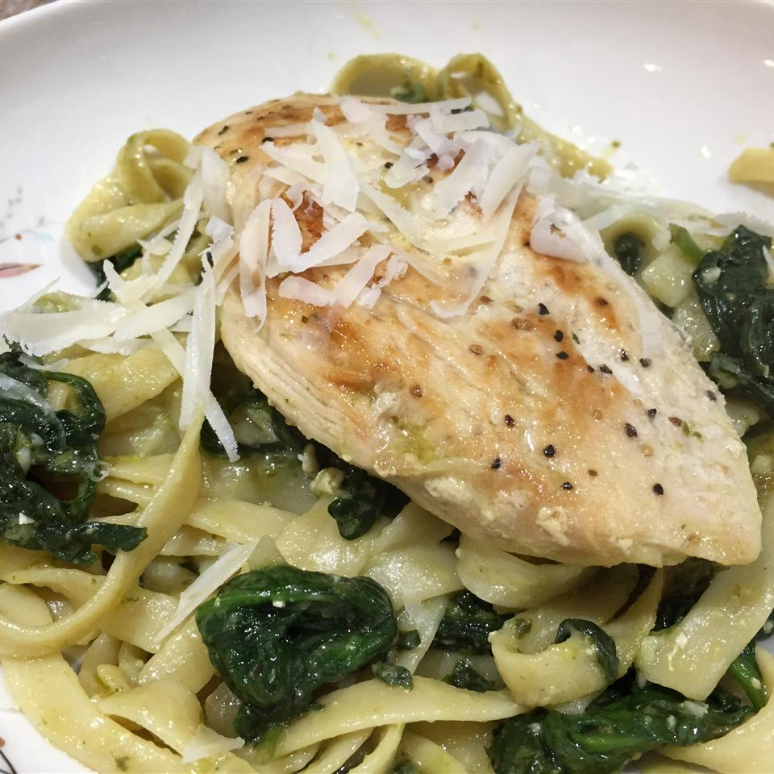

Chicken Pesto with Fettuccine and Spinach

A simple but delicions chicken a pesto dish with added spinach
Consider adding tomatoes or mushrooms for extra flavor!
- 1 tablespoon olive oil
- 1 1/4 pound skinless, boneless chicken breast halves
- 1 large onion, chopped
- 1 1/2 cups Swanson Chicken Broth
- 1 (8 oz) jar pesto sauce
- 1 (7 oz) package fresh baby spinach
- 1/2 (16 oz) box fettuccine, cooked and drained
- 1/4 cup shredded Parmesan cheese
- Heat the oil in a 12-inch skillet over medium-high heat.
Add the chicken and cook for 10 minutes or until well browned
on both sides. Remove the chicken from the skillet.
- Reduce the heat to medium. Add the onion and cook for 3 minutes
or until tender, stirring occasionally. Stir in the broth and pesto
sauce. Add the spinach. Cover and cook for 5 minutes or until the spinach is wilted.
- Stir in the fettuccine. Return the chicken to the skillet. Cover and cook for 5 minutes
or until the chicken is cooked through. Sprinkle with the cheese, if desired.